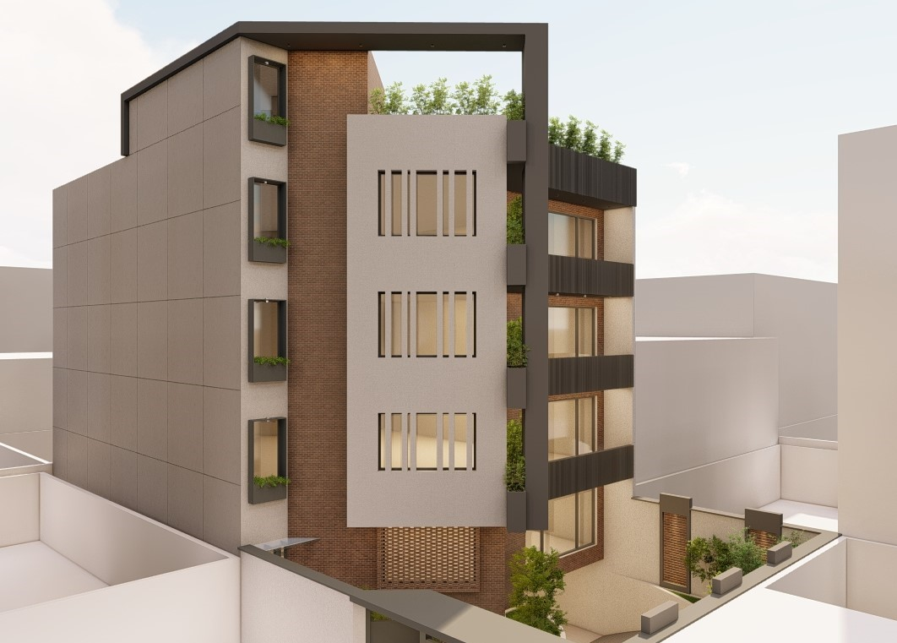
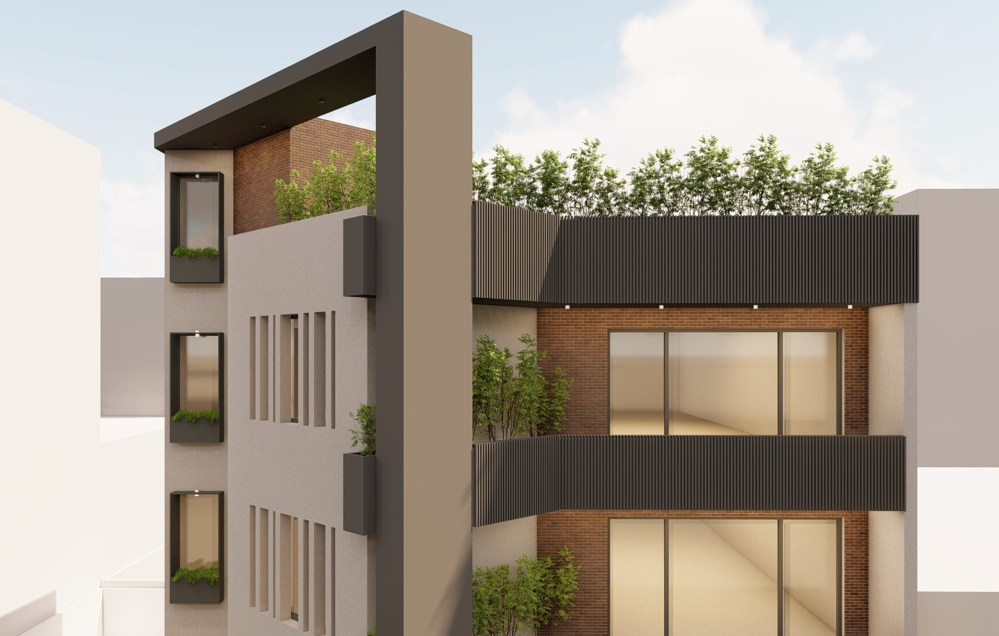
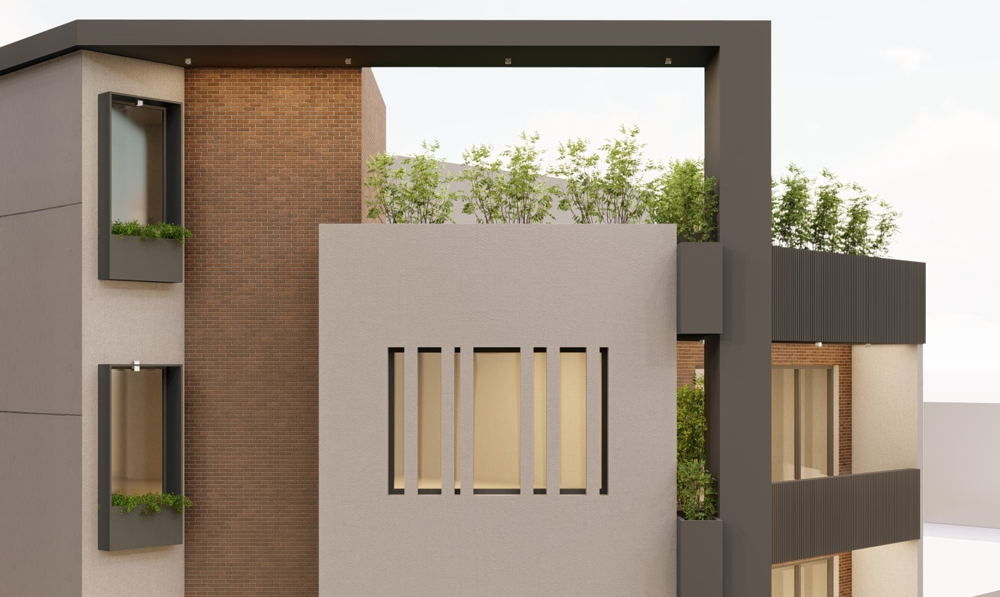
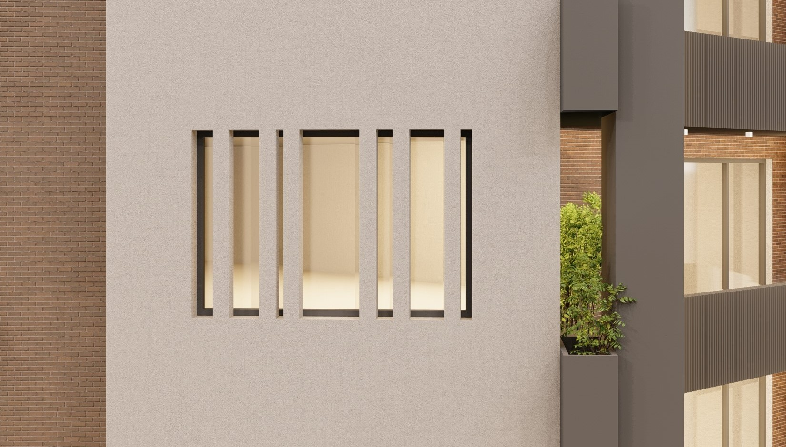

Facade Design

Location
Year
Scope
Collaboration
Commissioned by
Apartment no.71 is a contemporary facade design that reimagines the identity of an urban residential building through the expressive use of brick. The proposal combines warm, textured brick with clean plastered surfaces and bold metal frames to create a composition that is both timeless and contemporary. Deep balconies, integrated planters, and carefully proportioned openings add depth and rhythm to the elevation while enhancing the relationship between architecture and greenery. The material palette emphasizes durability and warmth, with the natural character of brick providing a strong visual contrast to the crisp geometric elements. Designed to strengthen the building's presence within a dense urban context, the façade creates a distinctive architectural identity while balancing solidity, openness, and refined detailing.



